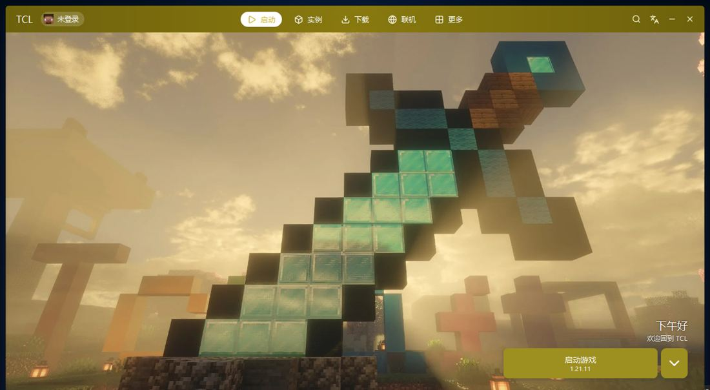
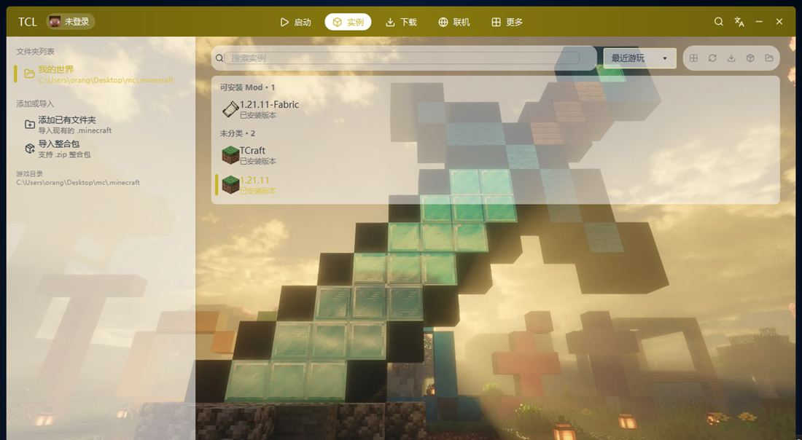
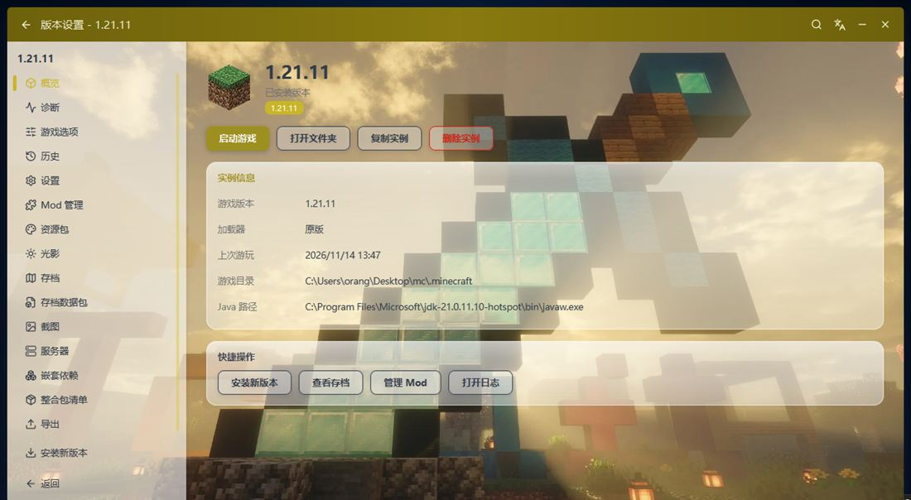
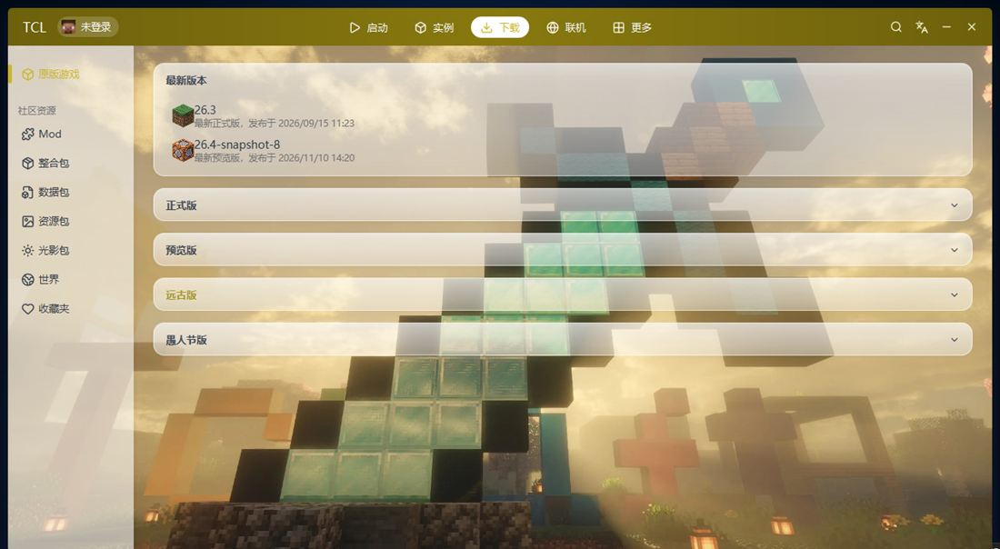
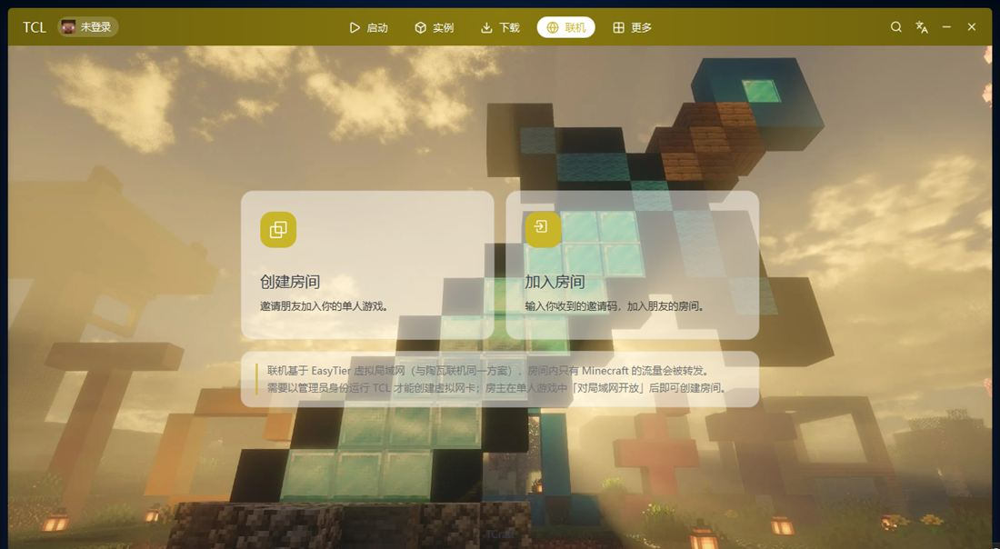
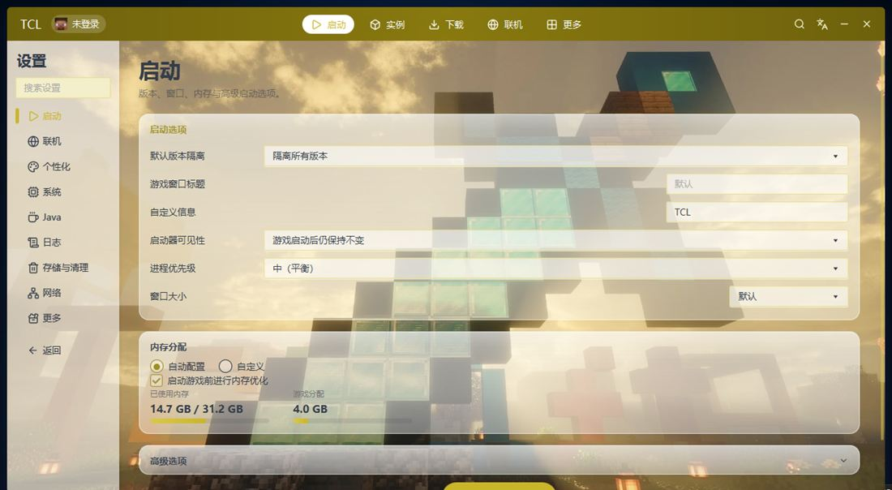
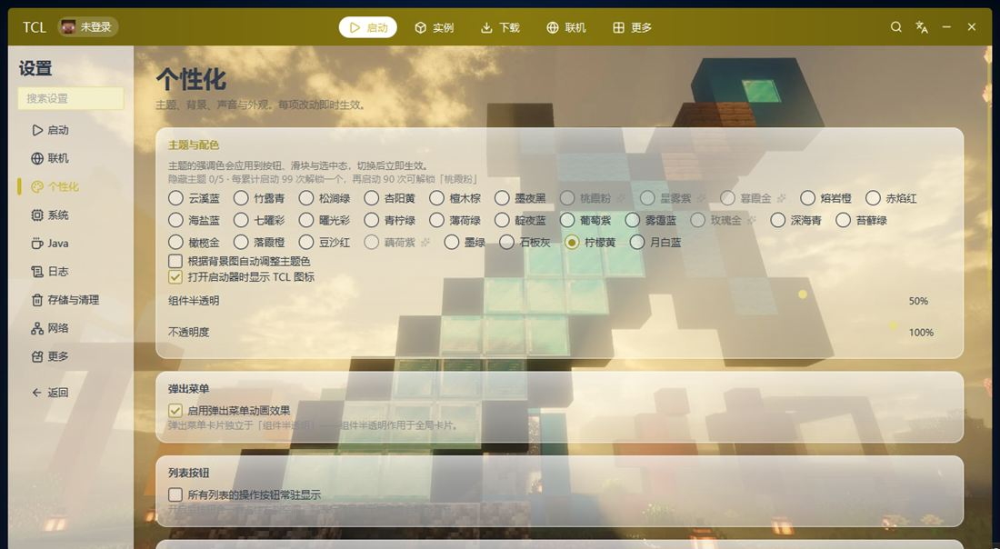

这是 JavaFX 独立重构后的第一个正式版，仍有许多功能在打磨，个别地方可能没法正常使用。遇到问题欢迎 到 GitHub 提 Issue 或 加入 QQ 交流群告诉我们。
毛玻璃卡片压在背景图上，主题色跟着壁纸自动生成。







该有的都有，不该麻烦的都不麻烦。
自动安装原版与 Fabric、Forge、NeoForge、OptiFine；Modrinth、CurseForge 整合包一键导入。
微软账号一键登录，浏览器登录完自动跳回启动器；也支持离线与第三方（Yggdrasil）认证。
基于 EasyTier 虚拟局域网。创建房间把邀请码发给朋友，单机也能联机，无需公网 IP。
游戏、Mod、光影、材质包一站下载；多镜像自动测速，哪个快用哪个，慢了自动切换。
每个实例独立的版本、存档与 Mod，互不干扰；版本设置可以单独调整内存与 Java。
自定义背景与主题色，主题色跟着壁纸自动生成；动画速度、组件透明度都能调。